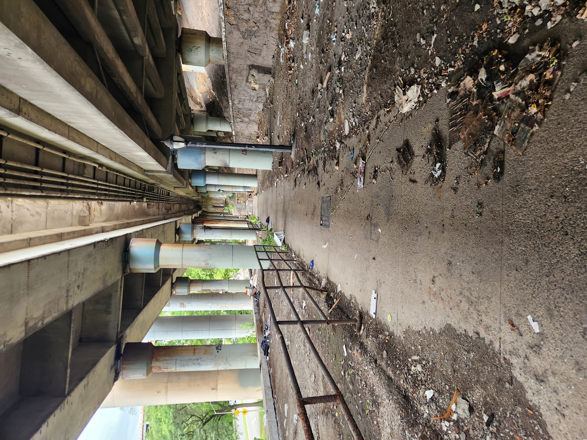

New York's Forgotten Park along the HudsonFort Washington Park provides an escape from urban life, but navigating to the park around rail and automotive thruways reveals a patchwork of unfinished urban plans.by Rob Reid Nestled between the Hudson River and the ceaseless flow of automotive traffic on the Henry Hudson Expressway, Fort Washington Park offers space for social gatherings, team sports, and solitary escapes from the concrete urban jungle above cliffs to the east. But decades of half-baked urban designs isolate the park even from neighboring residents- as access points weave through deserted tunnels and along busy parkways.  |